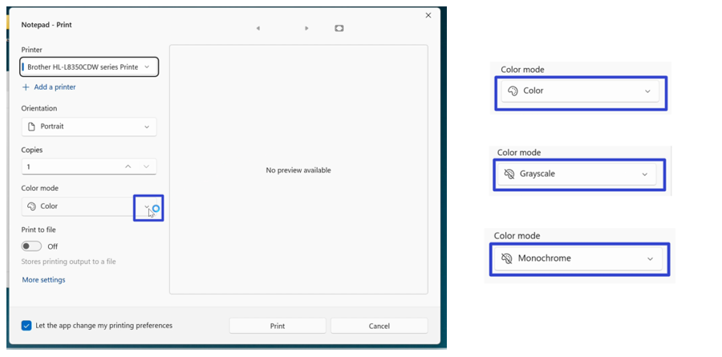

How to Edit the Print Settings in the Microsoft Notepad App (Windows 11)
This tutorial covers:
How to Change Printing Orientation:
How to Change Color Settings:
How to Change Paper Source:
How to Change Paper Media
How to Change Paper Size
How to Change Margins
No time to scroll down? Click through these tutorial slides:
Follow along with a video tutorial:
How to Change Printing Orientation With "Print" Menu
- Step 1: First open the “Print” window. Click the drop-down menu under “Orientation” to select either “Portrait” or “Landscape”.
How to Print With "More Settings"
- Step 1: Open the “Print” window. In the lower left click “More settings”.

- Step 2: In the “Printing Preferences” window that opens, click the drop-down menu under “Orientation” to select either “Portrait” or “Landscape”, and click “OK”.

How to Change Printing Orientation With "Page Setup"
- Step 1: First open a Notepad window. In the upper left click the “File” button.

- Step 2: In the menu that opens, click “Page setup”.
- Step 3: In the “Page Setup” window that opens, click under the “Orientation” section to select either “Portrait” or “Landscape”, and click “OK”.

How to Change Color Settings With "Print" Menu
- Step 1: Open the “Print” window. Click the “Color mode” drop-down menu to select either “Color”, “Grayscale”, or “Monochrome”. 
How to Change Color Settings With "More Settings"
- Step 1: First open the “Print” window. In the lower left click the “More settings” option.
- Step 2: In the “Printing Preferences” window that opens, click the “Paper/Quality” tab at the top.
- Step 3: Under the “Color” section, click to select “Black & White” or “Color”, and click “OK”.

How to Change Page Order
- Step 1: Open the “Print” window. In the lower left click “More settings”.
- Step 2: In the “Printing Preferences” window that opens, click the “Page Order” drop-down menu to select “Front to Back” or “Back to Front”, and click “OK”.

How to Change Paper Source With "Print" Menu
- Step 1: First open the “Print” window. In the lower left click the “More settings” option.
- Step 2: At the top of the “Printing Preferences” window that opens, click the “Paper/Quality” tab.
- Step 3: Click the “Paper Source” drop-down menu to select “Automatically select”, “Multipurpose tray”, or “Tray 1” and click “OK”.
How to Change Paper Source With "Page Setup"
- Step 1: Open a Notepad window. In the upper left click “File”.
- Step 2: In the menu that opens, click “Page Setup”.
- Step 3: Click the “Source” drop-down menu to select “Automatically select”, “Multipurpose tray” or “Tray 1”, and click “OK”.
How to Change Paper Media
- Step 1: First open the “Print” window. In the lower left cilck “More settings”.
- Step 2: At the top of the “Printing Preferences” window that opens, click the “Paper/Quality” tab.
- Step 3: Click the “Media” drop-down menu to select one of the options, and click “OK”.

How to Change Paper Size
- Step 1: Open a Notepad window. In the upper left click the “File” button.
- Step 2: In the menu that opens, click “Page setup”.
- Step 3: In the “Page setup” window that opens, click the “Size” drop-down menu, select one of the options, and click “OK”.
How to Change Margins
- Step 1: First open a Notepad window. In the upper left click the “File” button.
- Step 2: In the menu that opens, click “Page setup”.
- Step 3: In the “Page setup” window that opens, under the “Margins” section type a number in the “Left”, “Top”, “Right”, and “Bottom” fields, then press Enter or click “OK”.

Save these instructions for later with this free tutorial PDF.